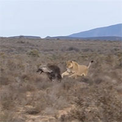
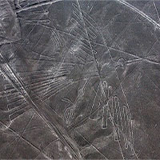
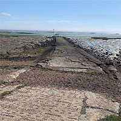

"Bàn cờ cát" kỳ lạ xuất hiện ven hồ Mỹ
- 199 Chủ nhật, 16/1/2022, 19:26 (GMT+7)
Nước, cát, gió và nhiệt độ thấp tạo nên những cột cát tự nhiên với hình dạng đặc biệt trên bờ hồ Michigan.
Những "tác phẩm điêu khắc cát" kỳ lạ xuất hiện ven hồ Michigan, Mỹ, đầu tháng 1 thu hút sự chú ý của các nhiếp ảnh gia. Sự hình thành của chúng phụ thuộc vào nhiều yếu tố, trong đó có cát, nước và điều kiện gió, theo nhà vật lý Daniel Bonn, người đứng đầu Viện Van der Waals-Zeeman thuộc Đại học Amsterdam.
Những cột cát "trang trí" cho bờ hồ Michigan trong công viên Tiscornia, phía sau là hải đăng North Pier. (Ảnh: Terri Abbott)
Nhiệt độ mùa đông lạnh giá của Michigan đã tạo điều kiện cho những cấu trúc giống quân cờ hình thành, theo Bonn. "Tôi cho rằng có những phần chất lỏng trong cát đóng băng khi trời lạnh", ông giải thích. Bãi cát ven hồ Michigan là nơi nhiều gió. Khi những cơn gió đầy cát thổi vào các tảng nước đóng băng này, hai điều dường như đối lập sẽ xảy ra.
Thứ nhất, một số hạt cát có thể bám vào tảng băng, khiến nó tăng kích thước. Điều này tạo ra một cấu trúc giống lâu đài cát gần như hình trụ. Thứ hai, gió chứa cát có thể làm xói mòn cột cát, lấy đi cát và khiến hình trụ mang hình dạng bất đối xứng. Một số hạt cát bị đẩy ra từ số cột này sẽ được cuốn đến nơi khác ven hồ.
Nhiếp ảnh gia Joshua Nowicki cũng bắt gặp cột cát tại công viên Tiscornia vào ngày 7 và 8/1. Anh đã thấy những cấu trúc tương tự trước đây và cho biết, chúng rất hiếm nhưng có thể xuất hiện vào bất cứ khoảng thời gian nào trong năm với điều kiện có cát ướt và gió lớn kéo dài vài ngày. Trong phần lớn trường hợp, chúng chỉ cao vài cm, Nowicki cho biết.
Các "tác phẩm điêu khắc cát" mà Nowicki nhìn thấy năm nay nằm trong số những tác phẩm cao nhất anh từng chụp, cột lớn nhất cao khoảng 38 cm và đường kính vài cm. "Dọc theo bờ hồ, có ít nhất 6 cụm với 30 cột cát trở lên trong mỗi cụm", anh nói.
Hầu hết cột cát không tồn tại lâu. Thông thường, trong vòng vài ngày gió sẽ hoàn toàn bào mòn hoặc làm đổ sập chúng, theo Nowicki. Nếu nhiệt độ tăng lên trên ngưỡng đóng băng, chúng cũng sẽ vỡ vụn. Ngoài ra, vào mùa đông, chúng sẽ sớm bị tuyết phủ kín.
Nowicki cho biết, các cột cát tại công viên Tiscornia đã sụp đổ đầu tuần này khi trời bắt đầu ấm lên. "Thời gian tồn tại ngắn khiến chúng trở nên rất đặc biệt. Bạn phải có mặt ở đó đúng lúc để nhìn thấy chúng khi hình dạng vẫn còn rõ ràng", anh nói.
Cập nhật: 17/01/2022 Theo VnExpress
- 199 Chủ nhật, 16/1/2022, 19:26 (GMT+7)
-  Linh cẩu nâu hoảng sợ bỏ chạy khi gặp sư tử cái
- Robot sao Hỏa lấy mẫu đá sau sự cố "tắc họng"
- Rằm tháng Giêng tại sao gọi là Tết Nguyên Tiêu?
- Trái đất từng hứng chịu lượng bức xạ cực tím khủng khiếp, gấp 10 lần ước đoán trước đây
- Chuyện nàng cung nữ hiếu thảo: Sự tích Tết Nguyên Tiêu – Rằm tháng Giêng
- Những lễ vật không thể thiếu khi cúng rằm tháng Giêng
-  Bí ẩn về những hình vẽ cổ đại ở Peru đã có lời giải?
-
 Nguyên nhân khiến bạn mệt mỏi
khi phải di chuyển hàng giờ bằng ô tô và máy bay
Nguyên nhân khiến bạn mệt mỏi
khi phải di chuyển hàng giờ bằng ô tô và máy bay -
 Lý giải hiện tượng dưa hấu bỗng
dưng phát nổ
Lý giải hiện tượng dưa hấu bỗng
dưng phát nổ - Tiết lộ bí ẩn trong những phút bay cuối cùng của MH370
-  Lối đi bộ được mệnh danh "con đường chết chóc" ở Anh
- Có thể bạn chưa biết: Cơ thể chúng ta có đến hai bộ não!